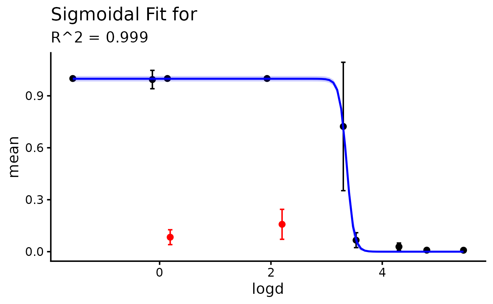

Fits a logistic (sigmoidal) curve using stats::nls() with stats::SSlogis(),
optionally excluding selected rows from model fitting while still displaying them
on the plot. Included and excluded points can be styled independently, and optional
SEM error bars and a 95% confidence interval ribbon are added to the plot.
Usage
sigmoid_regression(
data,
x_name,
y_name,
sem_name = NULL,
outlier_indices = NULL,
point_color = "black",
point_shape = 16,
point_size = 3,
excluded_point_color = "red",
excluded_point_shape = 16,
line_color = "blue",
line_type = "solid",
line_size = 1,
ci_fill = "blue",
text_size = 16,
x_label = NULL,
y_label = NULL
)Arguments
- data
A data frame containing all columns used for fitting and plotting.
- x_name
A string naming the numeric predictor column in
data.- y_name
A string naming the numeric response column in
data.- sem_name
Optional string naming the SEM column in
data. If provided, y +/- SEM error bars are added.- outlier_indices
Optional integer vector of row indices in
datato exclude from model fitting.- point_color
Color for included data points and their error bars.
- point_shape
Shape for included data points.
- point_size
Size for all points.
- excluded_point_color
Color for excluded points and their error bars.
- excluded_point_shape
Shape for excluded data points.
- line_color
Color of the fitted sigmoidal line.
- line_type
Linetype of the fitted line (e.g.,
"solid","dashed").- line_size
Line width of the fitted line.
- ci_fill
Fill color of the 95% confidence interval ribbon.
- text_size
Base text size used in
ggplot2::theme_classic().- x_label
Optional custom x-axis label. Defaults to
x_namewhenNULL.- y_label
Optional custom y-axis label. Defaults to
y_namewhenNULL.
Value
A named list with:
modelThe fitted
nlsmodel object.coefficientsNamed numeric vector of fitted coefficients.
plotA
ggplotobject containing points, fit, and confidence band.predicted_curveData frame with x values and fitted/CI values.
fit_dataData used for model fitting (after exclusions).
excluded_dataData excluded from fitting and highlighted in the plot.
Examples
my_data <- data.frame(
logd = c(-1.56, -0.13, 0.14, 0.19, 1.93, 2.2, 3.3, 3.53, 4.3, 4.8, 5.46),
mean = c(
1,
0.994,
1,
0.0836,
1,
0.158,
0.723,
0.0664,
0.0286,
0.00879,
0.00834
),
sem = c(
0.000000,
0.053012,
0.000000,
0.042940,
0.000000,
0.086477,
0.370647,
0.043030,
0.021356,
0.000411,
0.001492
)
)
outliers <- c(4, 6)
my_data_result <- sigmoid_regression(
data = my_data,
x_name = "logd",
y_name = "mean",
sem_name = "sem",
outlier_indices = outliers
)
#> Warning: no non-missing arguments to min; returning Inf
#> Warning: no non-missing arguments to max; returning -Inf
my_data_result$coefficients
#> Asym xmid scal
#> 0.99850002 3.36152935 -0.06377285
my_data_result$plot
